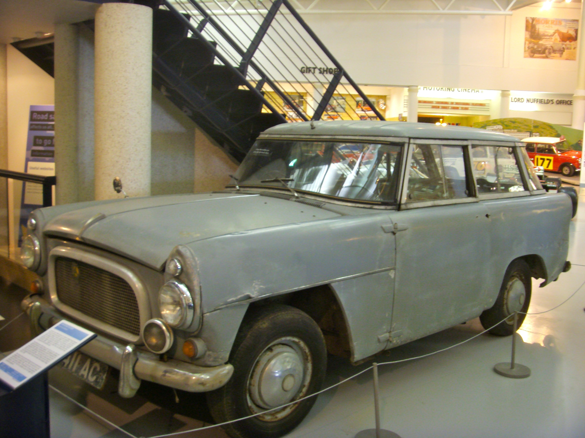

The Rover Company(originator of the Land Rover marque) was experimenting with a larger model than the Land Rover Series in 1951, when the Rover P4-based two-wheel-drive "Road Rover" project was developed by Gordon Bashford.[3] This was shelved in 1958 and the idea lay dormant until 1966, when engineers Spen King and Bashford set to work on a new model.[4]

The first Range Rover prototype was built in 1967 with plate number SYE 157F. The design of the Range Rover was finalised in 1969. Twenty-six Velar-badged engineering development vehicles were built between 1969 and 1970 and were road registered with the number plates YVB151H through to YVB177H.[5] vehicle in that colour was urgently required for marketing. (The Range Rover with chassis no. 1 was a green model with the registration "YVB 151H",[6] and is now on exhibition at Huddersfield Land Rover Centre, Huddersfield, West Yorkshire). The Velar name was derived from the Italian "velare" meaning to veil or to cover.[7] Range Rover development engineer Geof Miller used the name as a decoy for registering pre-production Range Rovers. The Velar company was registered in London and produced 40 Though being chassis no. 3, YVB 153H is believed to have been the first off the production line as a pre-production vehicles that were built between 1967 and 1970.[7] The Range Rover was launched in 1970.[8] In the early 1970s, the Musée du Louvre in Paris exhibited a Range Rover as an "exemplary work of industrial design".[9]
In 1971, ex-Cream drummer Ginger Baker used the unproven Range Rover to drive from Algeria to Lagos, Nigeria, to set up a recording studio and jam with Fela Kuti. Predating the Paris-Dakar rally the subsequent documentary is replete with such terrain, documenting the vehicle's endurance.
In 1972, the British Trans-Americas Expedition became the first vehicle-based expedition to traverse the Americas from north to south, including traversing the roadless Darién Gap. The specially modified Range Rovers used for this expedition are now on display in the British Motor Industry Heritage Trust collection at Gaydon, Warwickshire.
Range Rover sub-brands have been launched. In 2004, Land Rover debuted the Range Rover Sport, based on the Land Rover Discovery platform. Later models received the latest Range Rover platform. In 2011 came the Range Rover Evoque, and in 2017 the Range Rover Velar (re-using the name of the very first, pre-production Range Rovers).
From 1970 until 1987, the Range Rover was only available to American consumers through unofficial grey market import channels.[11] Its popularity via these imports prompted official U.S. sales to begin on 16 March 1987.[12] From that time until 1993, the U.S. marketing was all in the name of Range Rover, because it was the only model offered in the American market. In 1993, with the arrival of the Defender 110 and the imminent arrival of the Land Rover Discovery, the company's U.S. sales were under the name "Land Rover North America".
The first-generation Range Rover was produced between 1970 and 1996. It was available only in a 2-door body until 1981. (Before then, 4-door models had been produced by specialist firms).
_02.jpg)
Unlike other 4x4s such as the Jeep Wagoneer, the original Range Rover was not designed as a luxury vehicle. It was up-market compared to preceding Land Rover models, but the early Range Rovers had fairly basic, utilitarian, interiors with vinyl seats and plastic dashboards that were designed to be washed down with a hose. Convenience features such as power steering, carpeted floors, air conditioning, cloth/leather seats, and wooden interior trim were fitted later.
The Range Rover was a body-on-frame design with a box section ladder type chassis, like the contemporary Series Land Rovers. The Range Rover used coil springs as opposed to leaf springs, permanent four-wheel drive, and four-wheel disc brakes. The Range Rover was originally powered by various Rover V8
_4.6_HSE_wagon_(2011-04-02)_02.jpg)
Twenty-five years after the introduction of the original Range Rover, the second-generation (model-designation P38A) was introduced for the 1995 model year, based on the LWB chassis of the model, with an updated version of the Rover V8 engine or a 2.5-litre BMW six-cylinder turbo-diesel with a Bosch injection pump. This was the first diesel injection with electronic controls in a Land Rover, before common rails were introduced. This was a result of BMW's subsequent ownership of Rover Group and hence the Land Rover brand.
In 2001, the third-generation model was introduced,[15][16] which saw the model move further upmarket. Planned and developed under BMW ownership the third generation shared components and systems (electronics, core power units etc.) with the BMW 7 Series (E38). The 7 Series electronics system was being phased out during the development of the third-generation Range Rover and being replaced with the electronics from the BMW 5 Series (E39). There were three "Generations" of the L322. First, from 2001 until 2005, was the 4.4 litre M62 BMW V8 with ZF 5HP-24 transmission. (The manual transmission was dropped, leaving only the automatic). Then, from 2006 until 2009 a 4.4-litre Jaguar-derived engine or a 4.2-litre supercharged variant of the Jaguar engine partnered with the ZF 6HP-26 transmission. and thirdly, in 2010 Land Rover fitted the newly-designed AJ133 5.0 N/A and Supercharged engine with ZF 6HP-26 until the 2012 model year, the end of L322 production. (This summary does not give diesel options). From 2001-2004 the L322 used a standard BMW E39 electrics system. From 2005-2009 the L322 saw an updated Jaguar-derived electrical system with fibre optics and Bluetooth. From 2010-2012 the L322 used updated Jaguar-derived electrics, the first "modern feeling" system, replacing the gear lever with a rotary dial. In MY06 the first exterior update was applied with a face-lift of the front fascia, tail lamps (orange/red now became red/red), side vents (from two "gills" to three), clear indicator side-repeaters. Some other slight differences can be found on the "Supercharged" variant (rear lamps became clear/clear). The second exterior update was in 2010, bringing an even more modern feel to the L322 with a new fascia, tail lamps, side grills, and clear side markers. The interiors stayed relatively the same until 2006.5, (NAS 2007). A major change came in 2010: a range of new engines was offered, with 5-litre versions of the petrol V8 in standard and supercharged forms, and revision of the exterior front and rear profiles.
_TDV8_wagon_(2012-09-01).jpg)